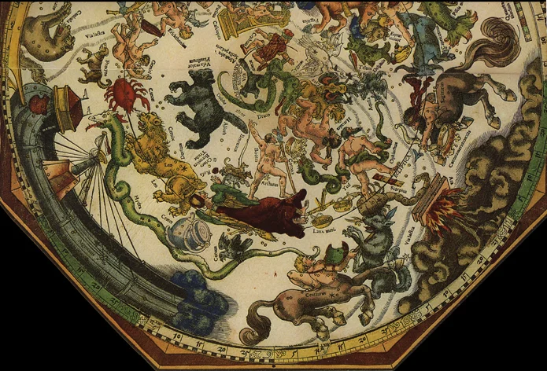

*** ..PAP GÁBOR
*** ..PAP GÁBOR **********
LOVASÍJÁSZ ÉGEN ÉS FÖLDÖN
Lovasíjász - ez a fogalom több rendbelileg fontos lehet számunkra. Mint emberszabású földlakók számára, mint az íjfeszítő népek nagy családjába tartozó minden nép minden egyes fia számára, különösen pedig számunkra, magyarok számára. Magából a fogalomból is mindkét, pontosabban mind a négy szó-elem egyformán fontos, a ló is, a lovas is, az íj is, az íjász is. Miért és miként? ...
... A mi "táltos csikónk" a szemétdomb fenekén vergődik, igen-igen leromlott állapotban, jelenlegi méltatlan gazdája, a boszorkány pedig megállás nélkül kövér, mutatós, aranyszőrű paripákat kínál helyette. Ezeket rendre vissza kell utasítanunk - kockáztatva a banya bosszúját -, a táltos csikót ki kell ásnunk a rászórt szeméthegy alól, és mielőtt még megtapasztalhatnánk az erejét és szépségét, bizony magunknak kell őt cipelnünk, miközben a trágyalé csurog a nyakunkba. De a kálváriánk csak a boszorkánytanya határáig tart. Az pedig már nincs messze. Ezért vihog, átkozódik és csepül bennünket olyan fékevesztett indulattal a banya, no meg az általa idomítottak elállatiasodott hada, hogy vessük el már magunktól azt az "elavult", "idejét múlt" jószágot. Azt a mihaszna gebét. Értsd: a magunk "nagy éves", azaz nemzeti szintű szellemi örökségét.
**********
Pedig ez az "elavult" szellemi örökség, ha egyszer megelevenedik (de csakis a mi áldozatvállalásunk árán!), három sebességfokozatban tud ég felé repíteni bennünket. A mai, legmagasabb szintűnek hirdetett oknyomozó tudományosság ebből csak két fokozatot ismer, illetve ismer el. "Hogyan repüljünk? - kérdezi a táltos az ő "kicsi gazdájától" - mint a madár, mint a szélvész (változatokban: mint a villám) vagy mint a gondolat?" - A madár a mechanikus mozgások sebességfokozata, a villám a fénysebességé . - és itt megáll a "hivatalos" tudomány tudománya. De a táltos ismeri és gyakorolja a harmadik fokozatot is, a gondolatét. És itt már nem tudja őt utolérni a boszorkány. ...
**********
"Miután Bábel tornya építésénél kudarc éri, Nimród (.) megpróbál az égbe repülni. Amikor már nem látja a földet, nyilakat lő az égbe. A nyílvesszőket, miután vérrel befesti, Dzsibril (Gábriel) angyal visszaadja Nimródnak, aki azt hiszi, hogy magát az Istent sebesítette meg." (II. kötet, Gondolat, 1988., 258. o., Nimród címszó.) - Nos, ennyit fogott fel az irányunkban ma sem sokkal megértőbb szemita hagyomány képviselője a "mágikus vadászatból", az "íj és nyíl ösvényén" eget ostromló imádságos magatartásból, a dolgok ősokáig felemelkedni vágyó tudásszerzési igyekezetből .
Egy szóval: a lovasíjászatból. Neki ennyi is elég. Nekünk nem.
